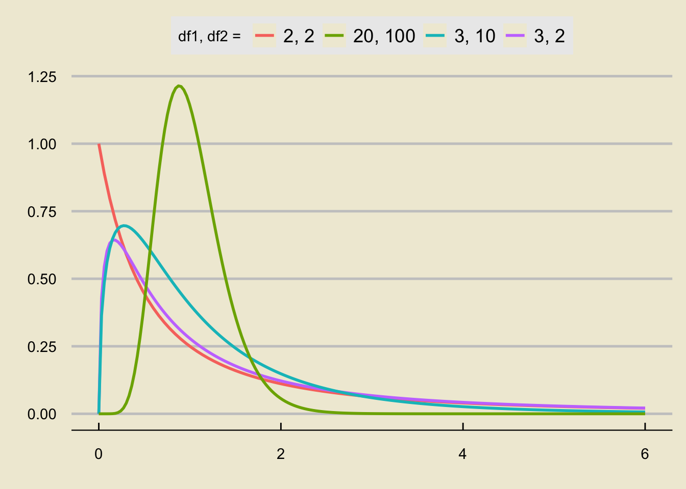

library(tidyverse)
data.frame(x = seq(0, 6, by = 0.01)) %>%
ggplot(aes(x = x)) +
stat_function(fun = df,
args = list(2, 2),
linewidth = 1,
aes(colour = "2, 2")) +
stat_function(fun = df,
args = list(3, 2),
linewidth = 1,
aes(colour = "3, 2"),
n = 200) +
stat_function(fun = df,
args = list(3, 10),
linewidth = 1,
aes(colour = "3, 10"),
n = 200) +
stat_function(fun = df,
args = list(20, 100),
linewidth = 1,
aes(colour = "20, 100"),
n = 200) +
theme_economist_white() +
theme(
panel.background = element_rect("#f0ebd8"),
plot.background = element_rect(fill = "#f0ebd8")
) +
xlab("") +
ylab("") +
labs(colour = "df1, df2 = ")